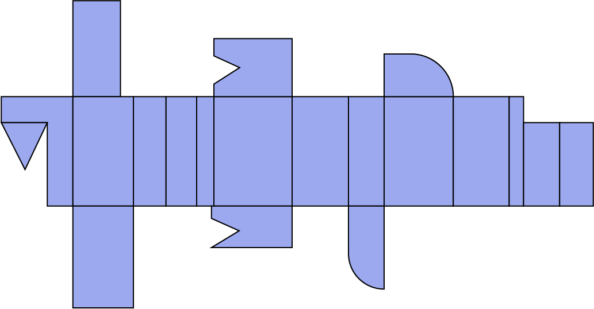
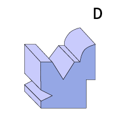
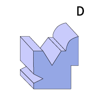
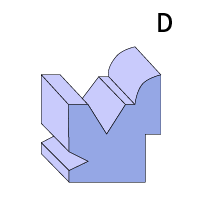
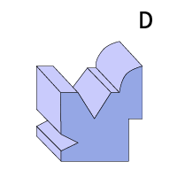
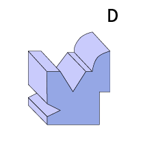

home
product
review
SPACE SNESE LENS
Q.
당신의 '공간 지각 능력'은 어느정도입니까?
다음 전개도를 접으면 어떤 모양이 나타날까?


정답은 A, 틀리셨나요?
그런 당신에게 필요한것은
공간 지각 능력
<
일상생활
렌즈이미지와 렌즈원리
이제 두려움을 갖지마세요.
스페이스 센스 렌즈를 착용한 당신은 적어도 세 가지 상황에 자신감을 가지게 될 겁니다.
1.
2.
3.
review & 마무리이미지
 


